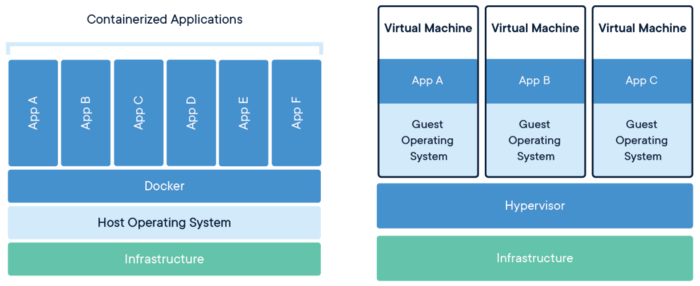

Docker
O que é Docker?
De forma resumida, o Docker é uma plataforma de código aberto, desenvolvido na linguagem Go e criada pelo próprio Docker.Inc. Por ser de alto desempenho, o software garante maior facilidade na criação e administração de ambientes isolados, garantindo a rápida disponibilização de programas para o usuário final.
Primeiro temos que definir o que não é Docker. Docker não é um sistema de virtualização tradicional. Enquanto em um ambiente de virtualização tradicional nós temos um S.O. completo e isolado, dentro do Docker nós temos recursos isolados que utilizando bibliotecas de kernel em comum (entre host e container), isso é possível pois o Docker utiliza como backend o nosso conhecido LXC.
Docker é uma plataforma Open Source escrito em Go, que é uma linguagem de programação de alto desempenho desenvolvida dentro do Google, que facilita a criação e administração de ambientes isolados.
O Docker possibilita o empacotamento de uma aplicação ou ambiente inteiro dentro de um container, e a partir desse momento o ambiente inteiro torna-se portável para qualquer outro Host que contenha o Docker instalado.
Isso reduz drasticamente o tempo de deploy de alguma infraestrutura ou até mesmo aplicação, pois não há necessidade de ajustes de ambiente para o correto funcionamento do serviço, o ambiente é sempre o mesmo, configure-o uma vez e replique-o quantas vezes quiser.
Outra facilidade do Docker é poder criar suas imagens (containers prontos para deploy) a partir de arquivos de definição chamados Dockerfiles (veremos isso melhor em posts futuros).
Não podemos nos esquecer também de que o Docker utiliza como backend default o LXC, com isso é possível definir limitações de recursos por container (memória, cpu, I/O, etc.)
Como ele trabalha utilizando cliente e servidor (toda a comunicação entre o Docker Daemon e Docker client é realizada através de API), basta apenas que você tenha instalado o serviço do Docker em um lugar, e aponte em seu Docker Client para esse servidor. A plataforma do Docker em si utilizada alguns conjuntos de recursos, seja para a criação ou administração dos containers, entre esses conjuntos podemos destacar a biblioteca libcontainer, que é responsável pela comunicação entre o Docker Daemon e o backend utilizado, é ela a responsável pela criação do container, e é através dela que podemos setar os limites de recursos por container.
Crédito
https://www.mundodocker.com.br/o-que-e-docker/
No docker temos dois componentes principais, a imagem e o container.
Imagem
Uma imagem é um arquivo inerte, como uma imagem ISO de um sisema operacional. Ela geralmente contém o núcleo de um sistema operacional, o núcleo de um sistema com um ou mais serviços. Como por exemplo a imagem oficial "ubuntu", que contém somente o núcleo do Ubuntu na última versão em 72,9MB. Como a imagem ribafs/ubuntu-maria, que contém a imagem ubuntu e o mariadb. A ribafs/ubunto-php, que contém a ubuntu o Apache, o PHP e extensões. A ribafs/ubuntu, que contém o LAMP com a ubuntu. Uma imagem é um arquivo inerte.
Container
O container dá vida para uma imagem. É como uma máquina virtual que cria um sistema operacional dentro de um sistema operacional hospedeiro. O container permite que a imagem interaja com nosso sistema operacional. Definimos esta interação através dos arquivos docker-compose.yml e do Dockerfile.
docker-compose
O docker compose é uma forma de administrar vários containers, definindo em um único arquivo as configurações para os diversos containers, no caso o docker-composer.yml que interage com o Dockerfile de cada container.
Estrutura do docker simplificada
- Aplicativos (so, apache, nginx, php, adminer, etc)
- Docker
- Sistema operacional hospedeiro (desktop ou servidor)
- Infraestrutura (hardware, a base)
Exemplo:
- Imagem ou imagens (Ubuntu, Apache, PHP, MySQL)
- Container
- Meu sistema operacional (Linux, Windows, Mac, etc)
- Meu computador
Pacote de software em unidades padronizadas para desenvolvimento, remessa e implantação.
Um contêiner é uma unidade padrão de software que empacota o código e todas as suas dependências para que o aplicativo seja executado de forma rápida e confiável de um ambiente de computação para outro. Uma imagem de contêiner do Docker é um pacote de software leve, autônomo e executável que inclui tudo o que é necessário para executar um aplicativo: código, tempo de execução, ferramentas do sistema, bibliotecas do sistema e configurações.
As imagens de contêiner se tornam contêineres no tempo de execução e, no caso de contêineres Docker, as imagens se tornam contêineres quando são executadas no Docker Engine. Disponível para aplicativos baseados em Linux e Windows, o software em contêineres sempre rodará da mesma forma, independentemente da infraestrutura. Os contêineres isolam o software de seu ambiente e garantem que ele funcione uniformemente, apesar das diferenças, por exemplo, entre o desenvolvimento e a preparação.
Contêineres Docker executados no Docker Engine:
Padrão: Docker criou o padrão da indústria para contêineres, para que eles pudessem ser transportados em qualquer lugar
Leve: os contêineres compartilham o kernel do sistema operacional da máquina e, portanto, não exigem um sistema operacional por aplicativo, gerando maior eficiência do servidor e reduzindo os custos do servidor e de licenciamento
Seguro: os aplicativos são mais seguros em contêineres e o Docker fornece os recursos de isolamento padrão mais fortes do setor
Comparação do docker com uma máquina virtual tradicional
Veja que cada VM contém o seu próprio sistema operacional, o que a torna mais lenta .
Docker se refere a muitas coisas. Isso inclui: um projeto da comunidade open source; as ferramentas resultantes desse projeto; a empresa Docker Inc., principal apoiadora do projeto; e as ferramentas compatíveis formalmente com a empresa. O fato de que as tecnologias e a empresa têm o mesmo nome pode causar uma certa confusão.
Veja uma simples explicação:
O software de TI "Docker” é uma tecnologia de containerização para criação e uso de containers Linux®.
A comunidade open source do Docker trabalha gratuitamente para melhorar essas tecnologias para todos os usuários.
A empresa Docker Inc. se baseia no trabalho realizado pela comunidade do Docker, tornando-o mais seguro, e compartilha os avanços com a comunidade em geral. Depois, ela oferece aos clientes corporativos o suporte necessário para as tecnologias que foram aprimoradas e fortalecidas.
Com o Docker, é possível lidar com os containers como se fossem máquinas virtuais modulares e extremamente leves. Além disso, os containers oferecem maior flexibilidade para você criar, implantar, copiar e migrar um container de um ambiente para outro. Isso otimiza as aplicações na cloud.
A tecnologia Docker usa o kernel do Linux e recursos do kernel como Cgroups e namespaces para segregar processos. Assim, eles podem ser executados de maneira independente. O objetivo dos containers é criar essa independência: a habilidade de executar diversos processos e aplicações separadamente para utilizar melhor a infraestrutura e, ao mesmo tempo, manter a segurança que você teria em sistemas separados.
As ferramentas de container, incluindo o Docker, fornecem um modelo de implantação com base em imagem. Isso facilita o compartilhamento de uma aplicação ou conjunto de serviços, incluindo todas as dependências deles em vários ambientes. O Docker também automatiza a implantação da aplicação (ou de conjuntos de processos que constituem uma aplicação) dentro desse ambiente de container.
Essas ferramentas baseadas nos containers Linux (o que faz com que o Docker seja exclusivo e fácil de usar) oferecem aos usuários acesso sem precedentes a aplicações, além da habilidade de implantar com rapidez e de ter total controle sobre as versões e distribuição.
O Docker utiliza a mesma tecnologia que os containers Linux tradicionais?
Não, a tecnologia Docker foi desenvolvida inicialmente com base na tecnologia LXC, que a maioria das pessoas associa aos containers Linux "tradicionais". No entanto, desde então, essa tecnologia tornou-se independente. O LXC era útil como uma virtualização leve, mas não oferecia uma boa experiência para usuários e desenvolvedores. A tecnologia Docker oferece mais do que a habilidade de executar containers: ela também facilita o processo de criação e construção de containers, o envio e o controle de versão de imagens, dentre outras coisas.
As vantagens dos containers Docker
Modularidade
A abordagem do Docker para a containerização se concentra na habilidade de desativar uma parte de uma aplicação, seja para reparo ou atualização, sem interrompê-la totalmente. Além dessa abordagem baseada em microsserviços, é possível compartilhar processos entre várias aplicações da mesma maneira como na arquitetura orientada a serviço (SOA).
Camadas e controle de versão de imagens
Cada arquivo de imagem Docker é composto por uma série de camadas. Elas são combinadas em uma única imagem. Uma nova camada é criada quando há alteração na imagem. Toda vez que um usuário especifica um comando, como executar ou copiar, uma nova camada é criada.
O Docker reutiliza essas camadas para a construção de novos containers, o que torna o processo de criação muito mais rápido. As alterações intermediárias são compartilhadas entre imagens, o que melhora ainda mais a velocidade, o tamanho e a eficiência. O controle de versões é inerente ao uso de camadas. Sempre que é realizada uma nova alteração, é gerado um changelog integrado, o que fornece controle total sobre as imagens do container.
Reversão
Talvez a melhor vantagem da criação de camadas seja a habilidade de reverter quando necessário. Toda imagem possui camadas. Não gostou da iteração atual de uma imagem? Simples, basta reverter para a versão anterior. Esse processo é compatível com uma abordagem de desenvolvimento ágil e possibilita as práticas de integração e implantação contínuas (CI/CD) em relação às ferramentas.
Implantação rápida
Antigamente, colocar novo hardware em funcionamento, provisionado e disponível, levava dias. E as despesas e esforço necessários para mantê-lo eram onerosos. Os containers baseados em docker podem reduzir o tempo de implantação de horas para segundos. Ao criar um container para cada processo, é possível compartilhar rapidamente esses processos similares com novos aplicativos. Como não é necessário inicializar um sistema operacional para adicionar ou mover um container, o tempo de implantação é substancialmente menor. Além disso, com a velocidade de implantação, é possível criar dados e destruir os criados pelos containers sem nenhuma preocupação e com facilidade e economia.
Em resumo, a tecnologia Docker é uma abordagem mais granular, controlável e baseada em microsserviços que valoriza a eficiência.
Host é a máquina onde é instalado o docker
No host podemos instalara diversas imagens e diversos containers.
Crédito
https://www.redhat.com/pt-br/topics/containers/what-is-docker